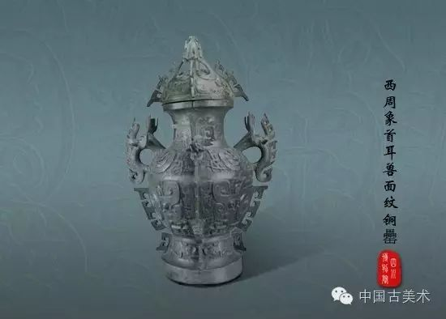
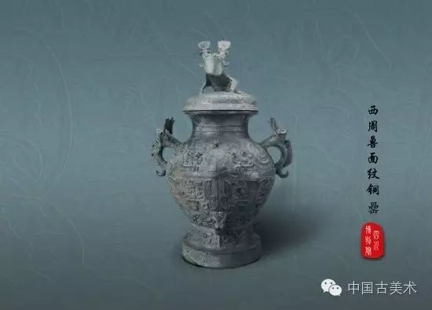
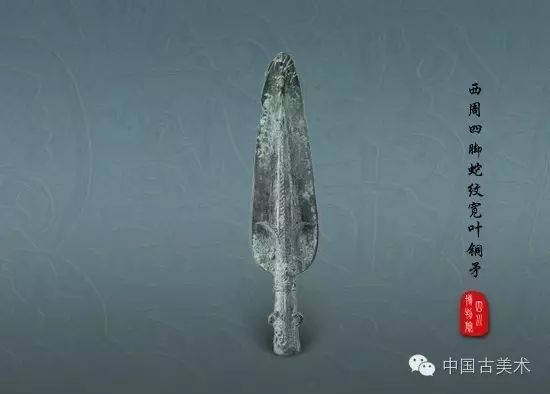
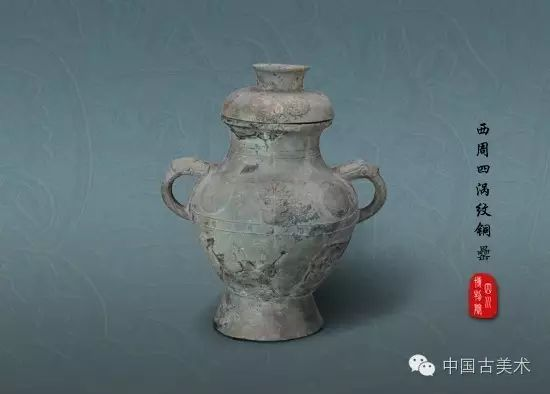
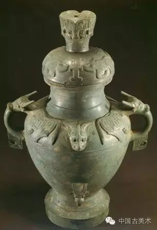

<div data-spm="content">
  <div class="text">
      <div class="text-title">
<h1>
一周一墓——四川省彭县竹瓦街青铜窖藏（古物地域性研究资料必备欢迎关注、分享）                <span class="article-tag">
</span>
</h1>
<div class="article-info">
<span class="time" id="news-time" data-val="1584860871000">
  2020-03-22 15:07        </span>
              </div>
</div>
<article class="article" id="mp-editor">
<!-- 政务处理 -->
<p></p> 
<p><span><strong><span>遗址名称：</span></strong>四川省彭县竹瓦街青铜窖藏遗址 </span></p> 
<p><strong><span>遗址时代：</span></strong><span>商周时期</span></p> 
<p><strong><span>发掘单位：</span></strong><span>四川</span><span>省文物考古研究所等</span></p> 
<p><strong><span>地理位置：</span></strong><span>四川</span><span>省彭州</span><span>竹瓦街北约二里的五显庙前铁路南侧</span><span></span></p> 
<p><span>彭州竹瓦乡，位于成都平原上的成灌铁路以南，青白江区以北。这是一片安静的土地，它的发展似乎并不突出。但在这片土地的下面，却埋葬着神秘的故事。</span></p> 
<p><span>1959 </span><span>年冬季，</span><span>在兴建成灌铁路的工程中，</span><span>新繁县民工大队在彭县（也就是如今的彭州）东约四十华里的竹瓦街（今竹瓦乡），</span><span>挖出了一个大陶缸，</span><span>里面盛放着</span><span>21 </span><span>件铜器，</span><span>包括</span><span>8 </span><span>件容器和</span><span>13 </span><span>件兵器。这里本来是一片乱坟堆，现在附近还有近代的坟墓。</span></p> 
<p><span>当时民工大队部派人把全部器物取出来，放在工程队的仓库内，并立即电报了相关部门。文物工作人员很快赶到，现场保存得很好。工作人员在笔记本上为这次发掘做了记录：</span></p> 
<p><span>这批铜器的具体出土地点在竹瓦街北约二里的五显庙前铁路南侧。从新修的路基平面以下的沟壁断面观察，原表土已除去，盛铜器的大陶缸底部痕迹距路基地表深约</span><span>2 </span><span>米，沟壁和陶缸附近及以上全部填充着细黄沙土，无任何扰乱痕迹。陶缸残片的内壁和铜器表面都有极细的黑色水渍土，细若黑粉（可能与陶缸上部表土情况有关）。在铜戈上糊有白膏泥，显系下埋时有意涂抹的。盛铜器的大陶缸已残缺，陶质为夹砂粗陶，器表为红褐色，无纹饰，胎呈灰黑色。从埋这陶缸处的痕迹知缸底是小平圆底，底径（外径）为</span><span>27 </span><span>厘米，</span><span>由底向上敞开，在高</span><span>44 </span><span>厘米处，腹径为</span><span>76 </span><span>厘米。胎壁厚度为</span><span>2 </span><span>厘米。陶缸上部情况不明……</span></p> 
<p><span>这些严谨而细致的描述，在冷静的文字下面，</span><span></span></p> 
<p><span>其实透露出文物工作人员难以压抑的激动。在彭州发现青铜器可是一个大事件，或许在附近还会有相似的陶缸？</span><span>20 </span><span>年后，一个更大的惊喜出现了。</span><span>1980 </span><span>年</span><span>2 </span><span>月</span><span>14 </span><span>日，竹瓦街已经改名为竹瓦公社，</span><span>七大队四队的社员在取砖瓦土时发现了一批青铜器。当时上了年纪的人回忆起</span><span>1959 </span><span>年冬季发生的事情，他们马上向上级作了报告。</span></p> 
<p><span>四川博物院接到通知后，马上组织发掘和研究人员，会同彭县文化馆的工作人员赶到了现场。他们发现这批铜器出土于竹瓦街北约</span><span>1 </span><span>公里、成灌铁路北侧几米远的地方，</span><span>东南方向距</span><span>1959 </span><span>年发现的西周青铜器窖藏地点只有</span><span>25 </span><span>米！铜器盛在一个大陶缸内，</span><span>埋于一条</span><span>3</span><span>、</span><span>4 </span><span>米宽的灰色土沟中，</span><span>灰色土周围为黄褐色粘土。陶缸底部距现存地表约</span><span>2.5 </span><span>米，陶缸上面的填土中夹杂有细卵石。陶缸已被取土时挖成碎片，为夹砂灰褐陶、圆唇、鼓腹、小平底，上半部饰有雷纹。这个陶缸高约</span><span>120 </span><span>厘米、口径</span><span>75 </span><span>厘米、腹径约</span><span>55 </span><span>厘米、底径</span><span>30 </span><span>厘米。缸内盛有四件铜罍和兵器，人面牛纹大铜罍就在其中。</span></p> 
<p><span>出土的铜罍均成对，且大小、形制、纹饰大体相似，可视为列罍。列罍应与中原地区的列鼎制度相同，是身份地位的象征。能够拥有高规格列罍的人，很有可能是蜀国的君王。</span></p> 
<p><span>对研究者来说，最重要的就是搞清楚人面牛纹大铜罍的铸造和埋藏年代。而关于这一点，有两种不同的意见：</span></p> 
<p><span>第一种意见认为，竹瓦街窖藏铜器主要或全部都是西周早期制作的，其埋藏年代也在西周早期。而持这种看法的学者在其中某些铜器的具体年代上，也有认识上的分歧。我国著名历史学家徐中舒先生认为，竹瓦街一号铜器窖藏的铜尊和</span><span>2 </span><span>件铜觯为商末之器，其余为蜀地仿制的铜器，“其最晚年代亦应在西周较早期”，它们的埋藏年代“距周初开国时期不远”。日本学者林巳奈夫先生则将这</span><span>3 </span><span>件铜容器与另外</span><span>9 </span><span>件铜觯都放在西周早期晚段。历史学家卢连成、胡智生认为，彭县竹瓦街窖藏铜器与宝鸡竹园沟墓地的时代基本相同，</span><span>“窖藏时代可能在西周前期”。第二种意见与第一种类似，只是其年代下限略晚。李伯谦先生认为，</span><span>竹瓦街铜器窖藏“尊和觯的造型以及的铭文、花纹具有商末周初作风，有的长援直内戈与水观音出土者相同，时代可早到商代，而罍的造型和回旋转尾夔纹是西周早期的典型形制与花纹，三角援直内戈与城固、水观音出土者比较，援较瘦长，</span><span>形制略晚，似多属西周早期，有的甚至可能晚到西周中期”。</span></p> 
<p><span>在学术界，第一种看法占了上风。但有一个问题是，这些具有中心地区西周前期特征的铜器会不会是蜀人在西周后期的仿制品？当时的情况是，</span><span>在模仿先前旧有风格铜器的制作过程中，在形态上和花纹上均会出现模仿走样的现象，或带上当时当地的一些元素。而竹瓦街窖藏铜器均无此种现象，</span><span>也不见任何具有西周后期时代特征的因素。竹瓦街铜器所有的年代指针都指向西周前期。</span></p> 
<p></p> 
<p><span>竹瓦街两个铜器群的铜容器，其时代风格均属商末至西周早期关中地区铜器的风格，无论这些铜容器是否是在四川铸造的，都必然是在四川与中心地区保持着密切关系的历史背景下、在中心地区技术和艺术影响下的产物。四川盆地与周王朝的中心关中地区发生密切的联系是在商代晚期至西周前期，从西周后期开始，四川盆地与关中地区的联系基本中断，由于得不到新的技术和艺术信息的补充，四川盆地才保持了西周前期以关中为中心的技术和艺术传统。这种状况在春秋中期以后才发生变化，随着江汉平原地区楚国的兴起，楚系铜器的制作技术和艺术风格顺着长江和岷江进入了成都平原，给四川铜器注人了新的活力，四川铜器才进入了新、旧两种风格并行的时期。</span></p> 
<p><strong><span>窖藏部分青铜器欣赏</span></strong></p> 
<p><strong></strong></p> 
<p><strong><span>西周象首耳兽面纹铜罍</span></strong></p> 
<p><span>1959</span><span>年，修建成灌铁路至彭县时，工人意外的在当时的竹瓦公社青龙大队发现了一批窖藏青铜器。计有</span><span>8</span><span>件青铜容器和</span><span>13</span><span>件青铜兵器。</span><span>1980</span><span>年</span><span>2</span><span>月，青龙大队四组一个农民挖泥烧砖，结果在距前窖藏东南约</span><span>25</span><span>米的地方再次发现一批存储在一个大陶缸中的青铜器。有</span><span>4</span><span>件容器、</span><span>15</span><span>件兵器。前后两次共计出土</span><span>40</span><span>件青铜器。其中一件象首耳兽面纹铜罍造型宏大，纹饰美观，构图精巧，堪称精品。</span></p> 
<p><span>这件西周时期的象首耳兽面铜罍，通高</span><span>69.4</span><span>厘米，口径</span><span>21. 8</span><span>厘米。铜罍器身的肩、腹部之间装饰有两个立体的长鼻象首耳（耳，即把手），两耳之间和一面腹下各铸一立体象首。自颈部至圈足，有四道扉棱将器体分为四等份，其间分别铸四组相同的纹饰。每组纹饰分上、中、下三段：肩上中间为一蟠龙，两边间以夔纹（夔为一种变形的小龙）；腹部为浓眉大眼的夔龙、张口蜷身，独足四趾；腹下饰牛纹一周。三段皆以云雷纹为地。盖部顶端饰有四道与器体相对应的鸟形扉棱，扉棱之间饰有卷身夔龙，以扉棱为鼻，云雷纹为地。古代的艺术家们以浮雕和圆雕的手法突出器物主纹和器物的某些特殊部位，对称布置，构成瑰丽繁缛的图案，颇具特色。整个铜罍通体碧绿晶莹，似有古玉的光泽，是西周时期青铜器中难得的精品。不愧为国之重宝。</span></p> 
<p><span>根据专家考证，这批青铜器铸造年代在商末周初，埋藏时间可能在西周末年。</span><span>"</span><span>国之大事，在祀与戎</span><span>"</span><span>。礼器有的是不能够动的，所谓</span><span>"</span><span>重器不出门</span><span>"</span><span>，如果对家族有重大意义的器物不能保住，通常意味着一个家族的消亡。那么这些埋藏在地下的精美青铜器背后，或许就有一个不为人知的家族兴亡的故事。或许是因为战乱，或许是因为其它无奈的原因，让它们的主人忍痛把他素日最心爱的宝贝埋藏地下，或许准备将来有朝一日能重回家园，与这些心爱之物重逢。</span></p> 
<p><span>这件铜罍曾在日本、美国、法国等国家展出，观众无不为之叹为观止。</span></p> 
<p><strong></strong></p> 
<p><strong><span>西周兽面纹饰羊头加环耳罍</span></strong></p> 
<p><span>外形：青铜，盖饰立体昂首蟠龙，角上出枝杈，形似十字。直口，腹饰两对称羊头和对称的兽衔双环，圈足。腹部纹饰分两层，均为变形云纹，圈足上饰夔纹。</span></p> 
<p><span>文物藏品等级：国家一级文物。</span></p> 
<p><span>流传历史：</span><span>1959</span><span>年四川省博物馆在四川省彭县竹瓦街发掘出土，发掘人王家佑。</span></p> 
<p><strong></strong></p> 
<p><strong><span>西周牛首纹铜钺</span></strong></p> 
<p><span>外形：青铜，舌形刃，斜肩，短銎，切面成长方形。一面饰牛首纹，肩饰带状圆点纹。另一面仅肩部饰凸弦纹二道，素面。</span></p> 
<p><span>文物藏品等级：国家一级文物。</span></p> 
<p><span>流传历史：</span><span>1980</span><span>年四川省博物馆在四川省彭县竹瓦街发掘出土，出土人范桂杰。</span></p> 
<p><strong></strong></p> 
<p><strong><span>西周兽面纹铜罍</span></strong></p> 
<p><span>外形：青铜，盖饰立体昂首蟠龙，扇形角有齿，背上有棱，身饰双回文和常见的巴蜀符号；龙首下饰蝉纹，外饰云雷纹。直口，颈肩之间饰二弦纹，肩部饰卷身夔纹，对称兽形双耳。腹部饰饕餮纹，圈足上饰夔纹，通身以云雷纹为地。</span></p> 
<p><span>文物藏品等级：国家一级文物。</span></p> 
<p><span>流传历史：</span><span>1959</span><span>年四川省博物馆在四川省彭县竹瓦街发掘出土，出土人王家佑。</span></p> 
<p><strong></strong></p> 
<p><strong><span>西周四脚蛇纹宽叶铜矛</span></strong></p> 
<p><span>外形：青铜，宽叶形，无锋，圆銎直达矛端，凸脊两侧饰尖角的变体雷纹。銎中部有对称的两小系，两面饰鸟羽及浅浮雕壁虎。</span></p> 
<p><span>文物藏品等级：国家一级文物。</span></p> 
<p><span>流传历史：</span><span>1959</span><span>年四川省博物馆在四川省彭县竹瓦街发掘出土，发掘人王家佑。</span></p> 
<p><strong></strong></p> 
<p><strong><span>西周四涡纹铜罍</span></strong></p> 
<p><span>外形：青铜，覆斗形盖，直口，敛颈，鼓腹，器盖肩上有环列四个凸圆形四合旋涡纹，腹部饰弦纹二，浮铸一羊头，对称兽头形双耳。腹与圈足间饰一兽形小耳。</span></p> 
<p><span>文物藏品等级：国家一级文物。</span></p> 
<p><span>流传历史：</span><span>1959</span><span>年四川省博物馆在四川省彭县竹瓦街发掘出土，出土人王家佑。</span></p> 
<p><strong></strong></p> 
<p><strong><span>西周羊首六涡纹铜罍</span></strong></p> 
<p><span>外形：青铜，覆豆形盖</span><span>,</span><span>四面有立棱</span><span>,</span><span>立棱间凸铸有四个四合旋涡纹。圈足形把手。直口</span><span>,</span><span>斜肩</span><span>,</span><span>鼓腹</span><span>,</span><span>下收接于圈足。肩饰立体盘角羊首双耳</span><span>,</span><span>环列六个四合漩涡纹</span><span>,</span><span>颈间及腹部至圈足四面有立棱</span><span>,</span><span>腹下一面有羊头小耳。素地</span><span>,</span><span>造型简洁明快。</span></p> 
<p><span>文物藏品等级：国家一级文物。</span></p> 
<p><span>流传历史：</span><span>1959</span><span>年，发掘地址为四川省彭县竹瓦街出土</span></p> 
<p><strong></strong></p> 
<p><strong><span>殷牧正父己觯</span></strong></p> 
<p><span>外形：青铜，椭圆形，侈口，颈稍敛，鼓腹，高圈足。颈腹间饰变体夔纹带一周，正中饰兽头。圈足饰两条相向的变体夔纹。外底上有线条纹饰，内底铭文“牧正父己”。</span></p> 
<p><span>文物藏品等级：国家一级文物。</span></p> 
<p><span>流传历史：</span><span>1959</span><span>年四川省博物馆在四川省彭县竹瓦街发掘出土。</span></p> 
<p><strong></strong></p> 
<p><strong><span>人面牛纹大铜罍</span></strong></p> 
<p><span>西周通高79厘米，腹径41厘米 </span></p> 
<p>罍盖的顶端浮雕成四面人形面容，造型饰纹犹如头上戴冠的人面。 <span>与广汉三星堆青铜大立人的头饰有几分相象，使人猜测它们之间是否存在某种渊源关系。盖身反时针饰前蹄下跪侧面同向的四个牛纹，罍双耳为圆雕牛头形，而牛身一分为二饰于肩两侧，两牛尾之间再饰一牛头，腹下另饰一小牛头形耳。所有的牛纹都采用比较写实的圆雕或高浮雕塑造；值得一提的是，从牛角等造型特点看，所饰之牛，都有一对弯曲的牛角，当为四川地区耕田的水牛形象。由于该罍装饰的牛纹较多，因而也有人将该罍称作牛纹罍的。全器除主图外，没有再饰其他纹饰，器身素洁，翠绿亮润，如翠玉一般，是古玩界常说的典型“绿漆古”。整件器物制作精美，简洁大气，不愧是巴蜀青</span><span>铜器的代表，国之重器。</span><a href="https://www.sohu.com/?strategyid=00001&amp;spm=smpc.content.content.1.17166357235714wQcb8f" target="_blank" title="点击进入搜狐首页" id="backsohucom" style="white-space: nowrap;" data-spm-data="1"><span class="backword"><i class="backsohu"></i>返回搜狐，查看更多</span></a></p>          <!-- 政务账号添加来源标示处理 -->
<!-- 政务账号添加来源标示处理 -->
<p data-role="editor-name">责任编辑：<span></span></p>
</article>
<div class="statement">平台声明：该文观点仅代表作者本人，搜狐号系信息发布平台，搜狐仅提供信息存储空间服务。</div>    <div class="bottom-relate-wrap clear type-3">
<div id="article-like" data-like-type="type-3"><div data-v-4443bf0f="" class="article-like"><div data-v-4443bf0f="" class="like-text"><div data-v-4443bf0f="" class="icon-like">&nbsp;</div> <em data-v-4443bf0f="">首赞</em></div> <div data-v-4443bf0f="" class="like-note">+1</div> <div data-v-4443bf0f="" class="toast" style="display: none;"><div data-v-4443bf0f="" class="toast-text">点赞失败</div></div></div></div>
<div class="read-wrap">
<span class="read-num">阅读 (<em data-role="pv" data-val="$articleStat.pv">838</em>)</span>
</div>
<div id="articleReport"><div data-v-87dfee26="" data-spm="report" data-spm-stop="init"><a data-v-87dfee26="" href="https://www.sohu.com/feedback?articleUrl=https://www.sohu.com/a/382149914_100013415&amp;pageType=report&amp;spm=smpc.content.content.2.17166357235714wQcb8f" target="_blank" data-spm-data="2" class="report-c">  <span data-v-87dfee26="" class="report" style="text-decoration: underline;">内容举报</span></a></div></div>
</div>

      <div id="sohu-play-content"></div>
  </div>
</div>